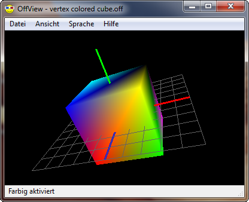
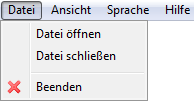
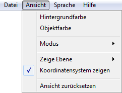
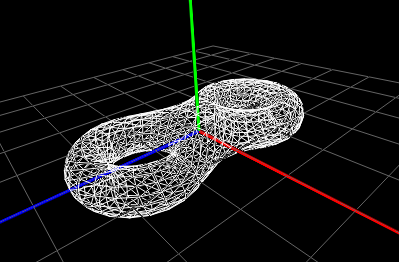
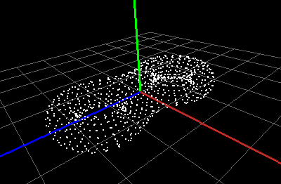
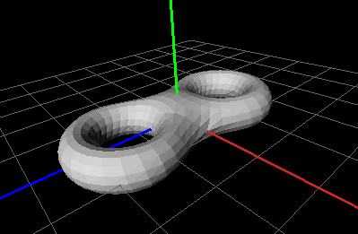
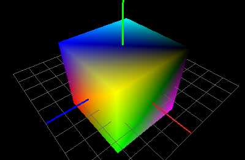
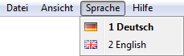
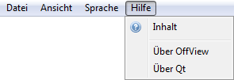

OffView-Hilfe

Inhalt
Über OffView
OffView ist ein Betrachter für Object File Format (.off) Dateien in 3D
mit OpenGL. Object File Format Dateien repräsentieren die Geometrie eines
Modells durch dessen Oberfläche, die sich aus beliebig komplexen Polygonen
zusammensetzen kann. OffView wird von vier Software Engineering Studenten
der Hochschule Konstanz Technik, Wirtschaft und Gestaltung entwickelt:
- Manuel Caputo,
- Markus Häcker,
- Daniel Fritz und
- Benjamin Stauder.
Das Projekt ist auf Google Code gehostet und kann unter
https://github.com/cry-inc/offview
gefunden werden. Das Programm ist freie Software und unterliegt den Bedingungen
der Version 3 der GNU General Public License (GPLv3).
Menü-Beschreibung
Hier eine Erklärung aller Menü-Punkte des Programmes:
-
Datei

-
Datei öffnen
Öffnet eine Datei im off-Format und zeigt das gespeicherte
3D-Modell im Zeichenfenster an.
-
Datei schließen
Schließt die geöffnete Datei und löscht die Grafik aus dem
Zeichenfenster.
-
Beenden
Beendet das gesamte Programm.
-
Ansicht

-
Hintergrundfarbe
Wählen Sie eine beliebige Hintergrundfarbe für das Zeichenfenster.
Sie können entweder aus einer Reihe vorgegebener Farben wählen
oder einen beliebigen Farbton erstellen.
-
Objektfarbe
Wählen Sie eine beliebige Farbe für das 3D-Objekt. Sie können entweder
aus einer Reihe vorgegebener Farben wählen oder einen beliebigen Farbton erstellen.
-
Modus
Sie können das 3D-Objekt in einem der folgenden Modi anzeigen lassen:
- Drahtgitter
Es werden alle Kanten des 3D-Objekts angezeigt. In diesem Modus
sind keine Farben verfügbar; auch die ursprünglichen Farben des Objekts sind
nicht zu sehen. Bei diesem Modus sind alle Kanten geglättet (Antialiasing).
Siehe auch: farbiger Modus.

- Punkte
Es werden alle Knoten des 3D-Objekts angezeigt. In diesem Modus sind
keine Farben verfügbar; auch die ursprünglichen Farben des Objekts
sind nicht zu sehen.
Siehe auch: farbiger Modus.

- Hart schattiert
Es werden alle Flächen des 3D-Objekts hart schattiert angezeigt.
In diesem Modus sind die ursprünglichen Farben des Objekts nicht zu sehen.
Nichtsdestotrotz kann dem Objekt eine Farbe zugewiesen werden.
Siehe auch: farbiger Modus.

- Weich schattiert
Es werden alle Flächen des 3D-Objekts weich schattiert angezeigt.
In diesem Modus sind die ursprünglichen Farben des Objekts nicht zu sehen.
Nichtsdestotrotz kann dem Objekt eine Farbe zugewiesen werden.
Siehe auch: farbiger Modus.
- Farbig
Es werden alle Flächen des 3D-Objekts angezeigt. Das Objekt wird
farbig dargestellt. Sind keine Farben vermerkt/(ab-)gespeichert,
können Sie mit Objekt-Farbe auswählen
die Farbe des Objekts beliebig bestimmen.

-
Zeige Ebene
Sie können sich optional eine oder mehrere Koordinatenebenen vom
Koordinatensystem des 3D-Objekts anzeigen lassen. Für weitere Informationen:
siehe auch Koordinatenachsen anzeigen
-
Koordinatensystem zeigen
Sie können sich optional die Koordinatenachsen vom Koordinatensystem
des 3D-Objekts anzeigen lassen, indem Sie diesen Menüpunkt aktivieren
bzw. deaktivieren. Die Farben der Achsen sind folgendermaßen festgelegt:
x-Achse: rot; y-Achse: grün; z-Achse: blau.
-
Ansicht zurücksetzen
Hier wird die Ansicht zurückgesetzt. Alle Verschiebungen, Rotationen
und Skalierungen werden entfernt.
-
Sprache

Hier kann die Sprache der Programmoberfläche geändert werden.
-
Hilfe

-
Inhalt
Diese Datei.
-
Über OffView
Eine kleine Dialogbox mit Informationen über OffView.
Enthält unter anderen die Versionsummer, die Lizenz sowie die Autoren des Programmes.
-
Über Qt
Informationen über das Qt-Toolkit.
Steuerung
Der Zweck dieses Programmes ist es, 3D-Modelle zu betrachten. Um das Programm
korrekt bedienen zu können, sollten Sie sich mit der
Steuerung auseinandersetzen:
-
Rotieren:
Normalerweise wird das 3D-Objekt um seine x- und y-Achse gedreht
(festgelegte Bezeichnung der Achsen - siehe hier).
Dazu halten Sie die linke Maustaste gedrückt und ziehen. Zusätzlich haben
Sie die Möglichkeit, das Objekt um einzelne Achsen zu drehen. Dafür
benötigen Sie zusätzliche Steuer-Tasten:
Halten Sie zusätzlich zur linken Maustaste die X-Taste gedrückt, dreht
sich das Objekt nur um die x-Achse. Gleiches gilt ananlog für Y- und Z-Achse.
-
Verschieben:
Ein 3D-Objekt kann auf der Zeichenfläche verschoben werden. Dazu wird die
rechte Maustaste verwendet. Ansonsten ist die Steuerung analog zum Rotieren:
wird keine Taste auf der Tastatur gedrückt, wird das Objekt in Richtung
seiner x- und y-Achse verschoben, mit zusätzlich gedrückter x-Taste nur in
Richtung seiner x-Achse, usw.
-
Zoomen:
Durch Drehen am Mausrad können Sie das Objekt vergrößern oder verkleinern.
Informationen für Windows-Benutzer
Um "OffView" als Standardprogramm zum Betrachten von 3D-Objekten im off-Format
zu nutzen, führen Sie folgende Schritte durch:
- Öffnen Sie einen Ordner, in dem mindestens eine Datei mit der Dateieindung
.off liegt
- Rechtsklicken Sie auf eine dieser Dateien und wählen Sie dann den Eintrag
"Öffnen mit..." (bzw. "Öffnen mit..."->Standardprogramm auswählen...)
- Wählen Sie das Programm "Offview" aus der Liste. Ist es dort nicht
verzeichnet, klicken Sie auf "Durchsuchen" und suchen Sie dann das Programm
"OffView". (Falls noch nicht geschehen, setzen Sie den Haken bei
"Dateityp immer mit diesem Programm öffnen")
- Bestätigen Sie mit "OK".